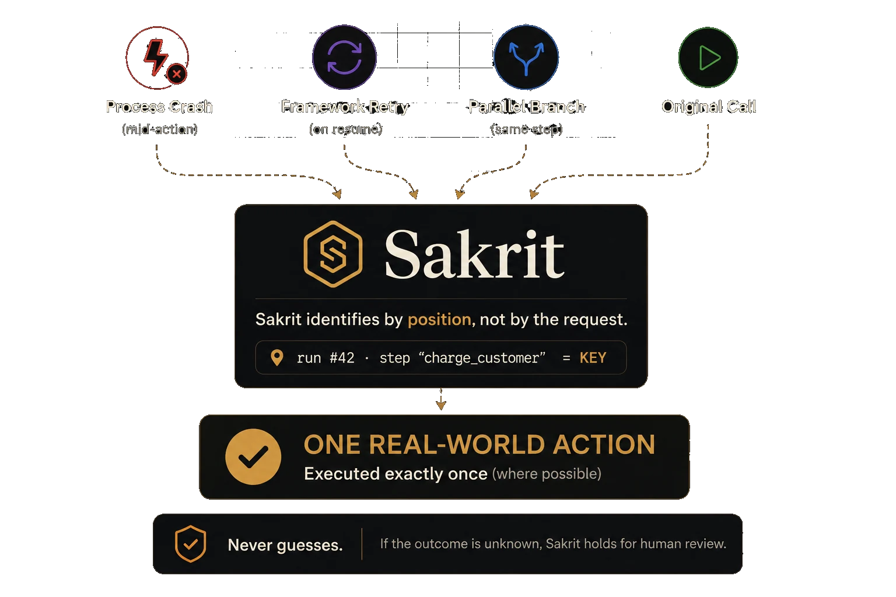

Checkpointing re-runs steps that already happened — the charge, the email, the write. Sakrit sits between your agent and its tools so every consequential action takes effect exactly once — or halts loudly and tells you. Never silent.

Run it yourself: python examples/money_agent/demo.py — naive prints 2 charges, guarded prints 1 charge.
Wrap the tool that touches the world and name each action's intent with a key from your domain. Crash, resume, or retry — it fires once, or halts and tells you.
from sakrit import Sakrit, SqliteLedger, EffectDecl, ArgClass sk = Sakrit(SqliteLedger("sakrit.db"), secret=SECRET) SEND = EffectDecl("email.send", {"to": ArgClass.IDENTITY, "subject": ArgClass.IDENTITY, "body": ArgClass.CONTENT}) # the key names the intent — a crash or retry replays, never re-sends sk.guard(SEND, send_email, key="welcome-ops", kwargs={"to": "ops@example.com", "subject": "Welcome", "body": "Hello!"})
Strict exactly-once has one impossible spot: the window between an effect firing and its record landing. Sakrit is built around admitting it — it halts loudly and surfaces the ambiguity for a human. Never a silent duplicate, never a silent drop. Proven by killing our own process at every dangerous boundary.
Agents reword arguments on every retry — so a payload hash mints duplicates. Sakrit keys an effect by which step of which run it is, so a reworded email is the same email, and a forgotten field can never become a second charge.
import sakrit opens no network connection and pulls in no framework.
Apache-2.0 forever, works offline, no account — you run it, you own the ledger. The
guarantee is the whole product.
You declare how strong each tool's guarantee can be — from true exactly-once where the provider cooperates, down to a loud, surfaced flag where it can't. Never guessed.
And every effect, every replay, every halt lands on one auditable ledger — sakrit audit shows exactly what fired, what replayed, and what's waiting on a human.
Payments are the vivid case, but Sakrit guards any action the world remembers — a charge, a database write, a webhook, an email — the same way. The code below is real and the output is what actually prints.
from sakrit import Sakrit, SqliteLedger, EffectDecl, ArgClass CHARGE = EffectDecl( "payment.charge", {"customer": ArgClass.IDENTITY, "amount_cents": ArgClass.IDENTITY}, ) # key = which intent; identity args = proof it's that intent sk.guard(CHARGE, charge_card, kwargs={"customer": "cus_8815", "amount_cents": 4999}, key=f"order-{order_id}-charge")
# one shared file ledger, coordinated across workers ledger = SqliteLedger("sakrit.db", multi_worker=True) def worker(): sk = Sakrit(own_conn(ledger), secret=SECRET) return sk.guard(RESERVE, reserve_unit, kwargs={...}, key="order-4471-reserve") # race all six at once → leases + fencing pick the one writer run_in_parallel([worker] * 6)
try: sk.guard(CHARGE, charge_card, kwargs={...}, key=key) except AmbiguousOutcome: # raised on every retry — never a silent duplicate or drop ... # out of band, once you've checked the provider yourself: ledger.accept_late_evidence(key, result={"id": "pi_9f2"}) # ...or failed=True if it provably never ran → retryable
SEND = EffectDecl("email.send", { "to": ArgClass.IDENTITY, # diff recipient = diff email "subject": ArgClass.IDENTITY, "body": ArgClass.CONTENT, # reworded body = SAME email }) sk.guard(SEND, send_email, key="welcome-ops", kwargs={"to": "ops@example.com", "subject": "Welcome", "body": "Hello!"})
Sakrit is Apache-2.0 and yours today — pip install sakrit. We're also onboarding a few design partners running agents that take real-world actions. Partners get white-glove integration, a direct line to the founder, and first access to the hosted review queue. The library stays free forever; the cloud is how we plan to make money.